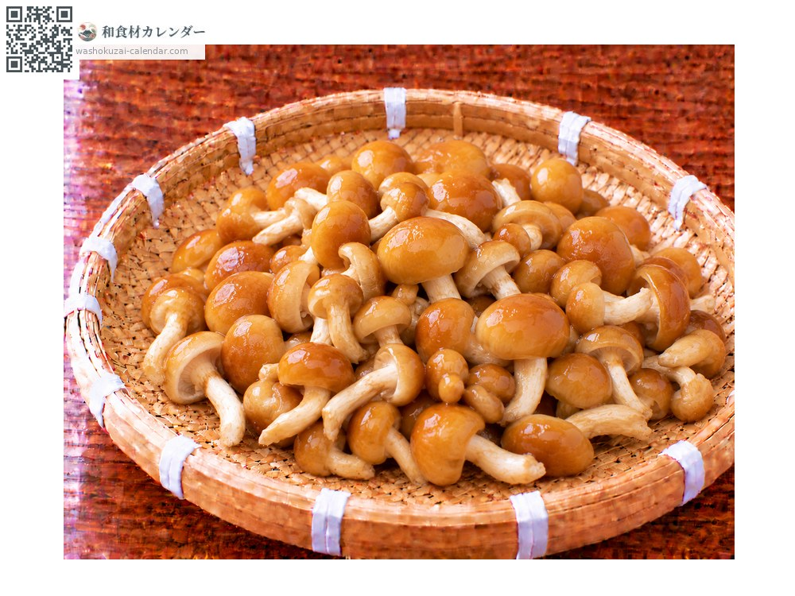
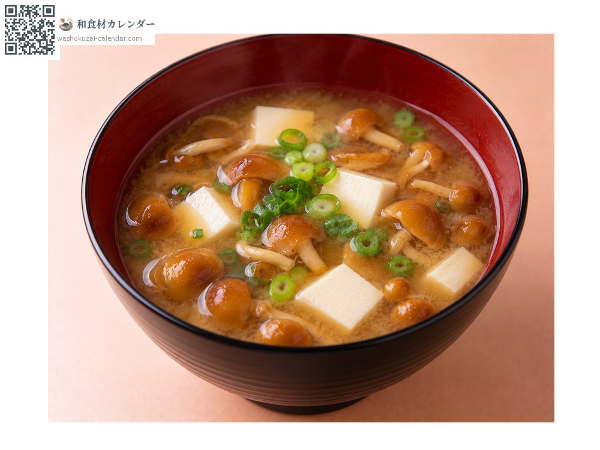
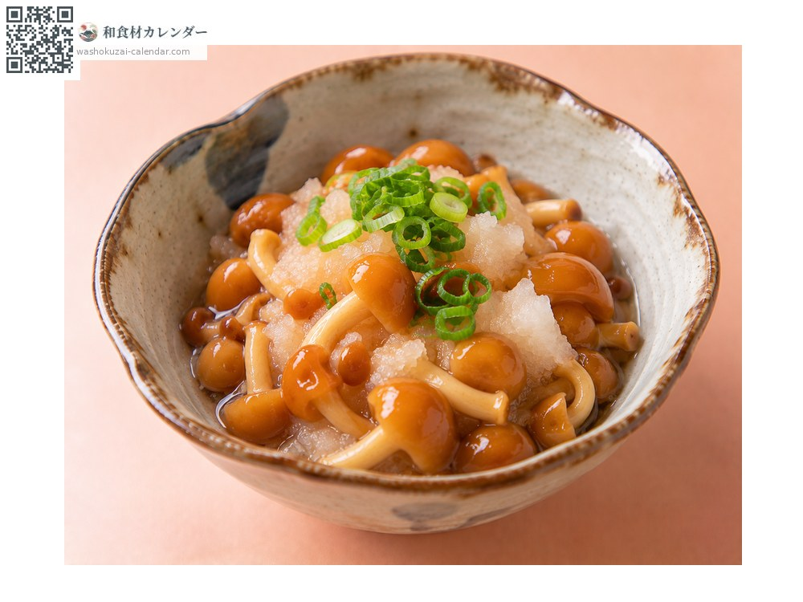
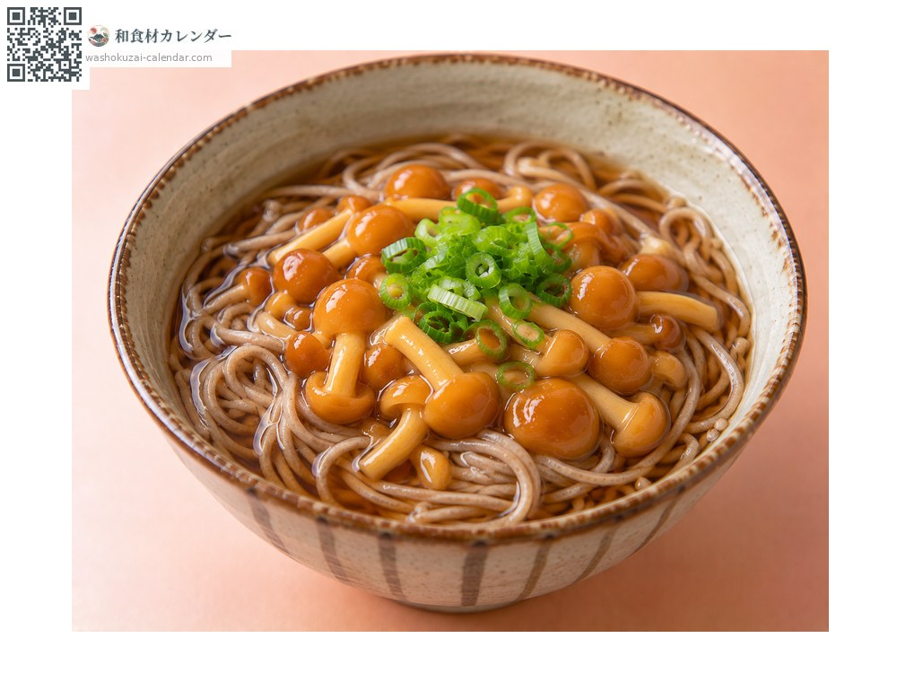
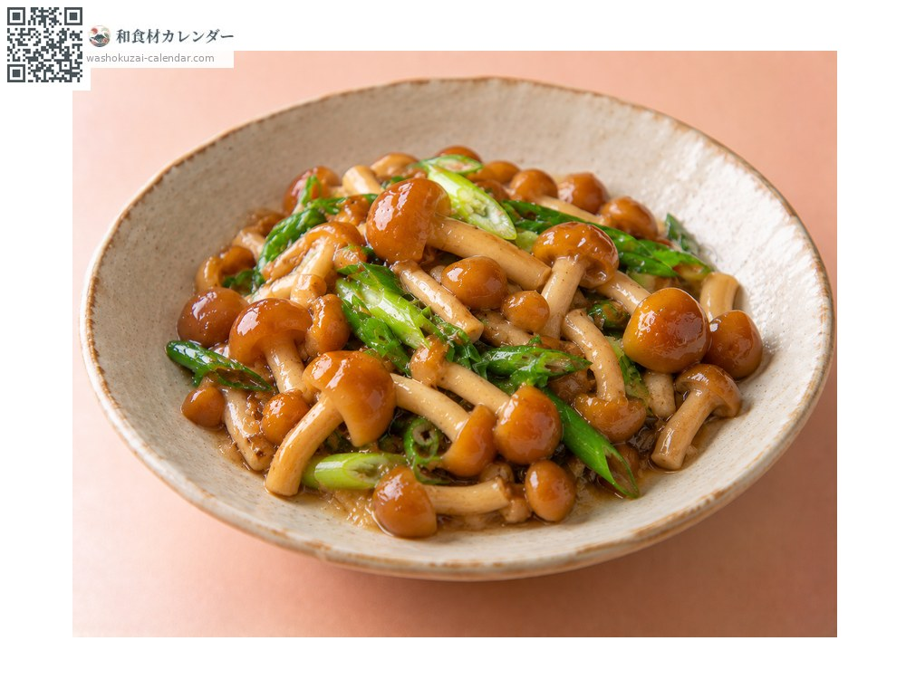

蔬菜
滑菇
ナメコ なめこ
应季时期为9月、10月

应季时期
1月
2月
3月
4月
5月
6月
7月
8月
9月
10月
11月
12月
应季有供应
烹饪方法

味噌汤
与豆腐搭配，黏滑感会让汤带上稠度。

萝卜泥拌
用白萝卜泥凉拌，吃起来很清爽。

荞麦面、乌龙面
加进汤汁里，面会更滑顺好入口。

热炒
快速拌炒，活用它的黏滑感。
挑选方法
伞还没开过头、黏液清澈不混浊。轴短而结实。
保存方法
容易坏。连袋冷藏，两天内用完。也能冷冻。
主要产地
小知识
表面的黏滑来自多糖类，洗掉太多就失去了这种菇的精髓。野生的长在倒下的山毛榉上，伞会开得很大。栽培品在幼嫩时就采收，所以个头较小。山形县的产量约占全国三成。